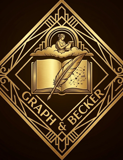
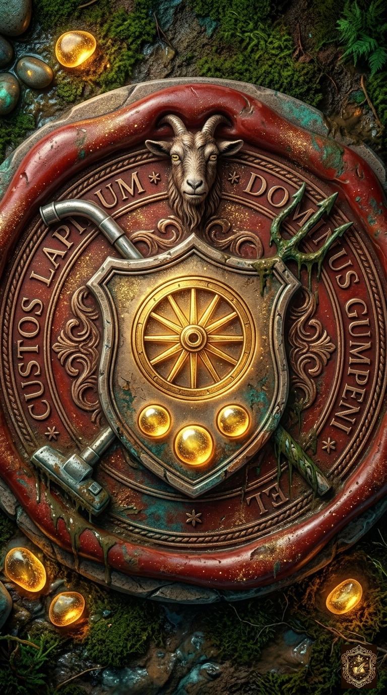
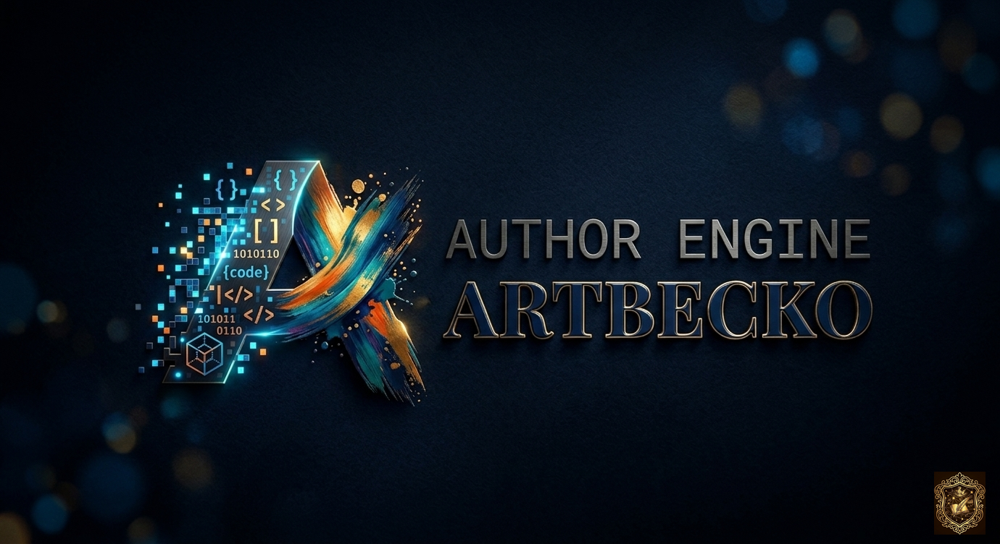
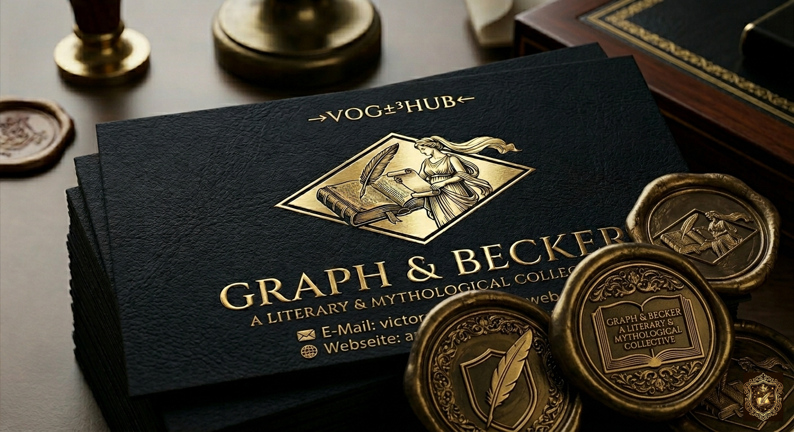

Impressum & Rechtliches

Die Herausgeber
Angaben gemäß § 5 DDG:
Victor Oliver Graph +³ Helmut U. Becker
c/o Joanna Beck
Weltzienstr. 9, 76135 Karlsruhe
Kontakt:
E-Mail: post@autoren-multiversum.de
Web: www.autoren-multiversum.de
Rechtliches
EU-Streitschlichtung:
Die Plattform zur Online-Streitbeilegung (OS) finden Sie unter:
https://europa.eu.
Streitbeilegung:
Wir sind nicht bereit oder verpflichtet, an Streitbeilegungsverfahren vor einer Verbraucherschlichtungsstelle teilzunehmen.
Hinweis zur künstlerischen Freiheit — Ein literarisches Experiment von VOG & HUB.
Die Inhalte unserer Publikationen (Victor Oliver Graph, Helmut U. Becker, Kai A. Wissmann, Viktor Kian, G.R. Immen, Savani von Vaske, Eleonore Nicke) sind Werke der Fiktion. Handlung, Personen und Orte sind frei erfunden oder fiktiv verwendet. Jede Ähnlichkeit mit lebenden Personen oder realen Ereignissen ist rein zufällig. Für die Richtigkeit der Inhalte in diesem und allen weiteren Werken übernehmen wir keine Gewähr.
Handlung, Personen und Orte sind frei erfunden.
Datenschutzerklärung (Vom Schutze der Geheimnisse)
II. Erfassung: Elektronische Depeschen nutzen wir nur, um Euer Anliegen zu bescheiden.
III. Eure Rechte: Ihr dürft jederzeit Löschung im Feuer der Vergessenheit verlangen.
Haftungsausschluß (Das Manifest)
Links: Für fremde Gasthöfe (Webseiten) leisten wir keine Gewähr.
Urheberrecht: Unsere Schriften entspringen unserem Geiste.


© 2026 AUTHOR ENGINE · ARTBECKO


→ Hier klicken, um unsere E-Mail freizuschalten ←